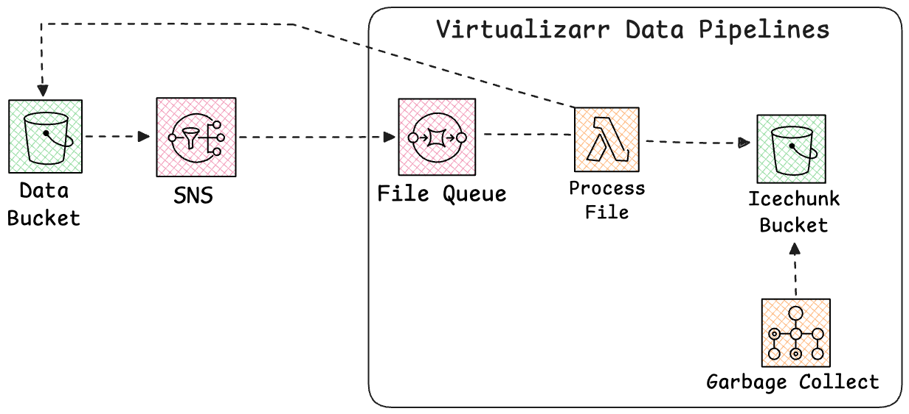

Why we built it
Bring the dataset knowledge, not the infrastructure
◆Your dataset knowledge
- How to parse this particular format.
- How these files concatenate into a cube and along which dimension.
- What the coordinate axis means, and which variables don't carry it.
- Which files are appends, which are in-place region writes.
⚙Repeatable infrastructure
- Containerized Lambdas, a queue and its batching configuration.
- Step Function orchestration, retries, concurrency limits.
- Icechunk garbage collection on a schedule.
- CDK code to configure and and deploy all the infrastructure
What it is
A template repository, not a framework
1Start from a template
A GitHub template repository. You create your own repo from it with the naming convention: datasetname-virtualizarr-data-pipelines and it is yours to modify. No dependency to track, no upstream to fight.
2Implement one protocol
Write a processor.py satisfying the VirtualizarrProcessor protocol. A sample processor with an in-memory store ships in the repo as a working example.
3Configure with types
A strongly-typed settings module with sensible defaults, overridden by a .env file. Buckets, regions, topics, batch sizes, concurrency.
4Deploy with CDK
The infrastructure builds your Docker images and stands up the Lambdas, the Batch job, the queue and the Step Functions orchestration. cdk deploy.
5Two processing paths
Backfill for the historical archive, forward processing for new files as they land. Same processor, same deployment.
→The shape stays fixed
Every dataset gets the same deployment shape. What
differs between projects is the processor and the configuration.
Forward processing architecture
New files land, the store stays current

⚡Announced
New objects in the data bucket raise S3 notifications to SNS. Set SNS_TOPIC and the stack wires the subscription to its queue for you.
≡Buffered
The SQS queue absorbs bursts and sets the pace. SQS_BATCH_SIZE controls how many files one Lambda invocation handles — and therefore files per commit.
♻Maintained
Garbage collection runs on a Batch cluster on the schedule set by GARBAGE_COLLECTION_FREQUENCY, expiring old snapshots so the store doesn't grow without bound.
Two paths
Load the archive once, then keep it current
⛏Backfill
A one-time, high-throughput bulk load of a large body of existing files. Initializes the store at full shape for every time step the inventory covers and uses a partitioned fork-and-merge cooperative distributed write, so many thousands of files process in parallel behind a small number of commits. Orchestrated by Step Functions.
▶Forward
The path for new production files as they become available. Files are
announced to an SQS queue, consumed by a Lambda, written to the main branch and
committed per batch. Not always an append: a coordinate already inside the
store's extent is an in-place region="auto" write.
Sequencing them
- Deploy with
BACKFILL_ENABLED=true; the forward consumer is held off automatically so backfill bootstrapsmainfirst. - Configure
SNS_TOPICnow — newly published files buffer in the queue while the backfill runs. - Backfill completes and promotes. Set
FORWARD_QUEUE_ENABLED=true, redeploy, and the queue drains onto the loaded store. - Anything published between building the inventory and the subscription going live can be replayed onto the queue by hand — no data gaps.
Backfill · the problem
Why you can't just append the archive
✕Appending to main
A thousand workers all move the same branch tip, and you get one commit per file — maximum contention, worst writes-per-commit ratio.
✓Fork and merge
Declare full shape on a backfill branch. Workers fork a clean
snapshot, write disjoint regions, never commit. A reducer merges into
one commit.

Region disjointness is the operator’s responsibility — two workers writing the same region will fail to merge.
Backfill · the mechanics
Init → Fork → Workers → Reduce → Promote
- Init. The coordinator creates the store with the
dataset's full dimension extent for the inventory, on a
backfillbranch, and commits. Workers can only fork a clean snapshot. - Partition. The inventory is split into partitions. Each becomes one commit, and partitions run serially.
- Fork. The coordinator forks the committed base snapshot for this partition.
- Workers. A distributed Map fans batches of keys to Lambdas. Each copies the fork, writes its files via
vds.vz.to_icechunk(fork.store, region="auto"), and pickles its fork to S3. No commits. - Reduce. When the partition's workers finish, a reducer merges every pickled fork into a single commit. Then the next partition forks from that new tip.
- Promote. After the last partition,
mainis fast-forwarded to the backfill tip.
| Setting | Default | What it trades |
|---|---|---|
| BACKFILL_PARTITION_SIZE | 500 | Files per partition = files per commit. Larger means fewer commits, but a failure loses more work. |
| BACKFILL_MAX_ITEMS_PER_BATCH | 10 | Files per worker, i.e. per child fork. Bounded by the Lambda timeout. |
| BACKFILL_MAX_CONCURRENCY | 50 | Workers in flight per partition. Cap it to respect rate-limited upstreams such as NASA EDL. |
In the field
Where it is running
◉NOAA HRRR
High-Resolution Rapid Refresh — the 3 km convection-allowing forecast model over CONUS, on hourly cycles.
◉NASA TEMPO
Geostationary air-quality spectrometer, scanning North America hourly through the daylight hours.
◉NOAA NAQFC
National Air Quality Forecast Capability — operational ozone and PM2.5 forecast guidance.
◉GOES CF
CF-convention GOES geostationary observations.
◉GPM IMERG
Half-hourly global precipitation, backfilled from the archive and kept current on the forward path.
→Five datasets, one stack
Weather models, air-quality forecasts, geostationary imagery and precipitation — different formats, cadences and volumes, the same deployment.
Adoption
What it takes to stand one up
- Create your repo from the template.
- Write
processor.pyagainst the protocol, replacing the sample. - Add tests — in-memory Icechunk fixtures ship with the template.
- Configure
.env: buckets, region, SNS topic, batch sizes. - Review with
cdk synth, thencdk deploy. - Backfill: upload an inventory, run
start_backfill.sh. - Enable forward processing and redeploy.
▶Forward methods
initialize_repo · initialize_session · process_file · commit_processed_files
⛏Backfill methods
initialize_backfill_store · open_backfill_repo · process_backfill_file
♻Shared
garbage_collect — used by both paths, run on the configured schedule.
Takeaways
Infrastructure once,
datasets many
1Repeatable by design
The infrastructure half of an Icechunk pipeline is the same for every dataset. Write it once, deploy it identically.
2Both paths, one processor
Fork-and-merge backfill for the archive, queue-driven forward processing to stay current — behind a single protocol.
3Yours to fork
A template repository under an open license. Take it, change it, and tell us what broke.
github.com/developmentseed/virtualizarr-data-pipelines
Questions, issues and pull requests welcome.